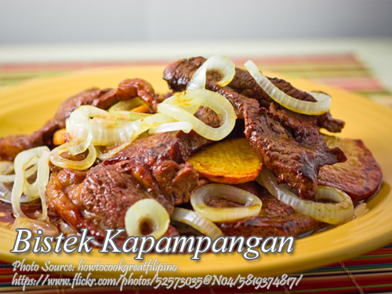

Bistek Recipe

Description
Bistek Kapampangan is a quick and easy Filipino beef dish originating from the Pampanga region, also known locally as bistig baka.
It features thinly sliced beef sirloin or tenderloin that is pounded to tenderize, marinated, and
then quick-fried for just 5 to 10 seconds per side to maintain succulence.
Ingredients
- 1/2 kilo beef sirloin or tenderloin slightly frozen
- 1 tsp. meat tenderizer
- 1 tsp. Worcestereshire Sauce
- 1/8 tsp. ground black pepper
- 1/8 tsp. rock salt
- 1 large white onion sliced into rings
For the Sauce
- 1/4 cup of soy sauce
- 1 Tbsp. calamansi juice or lemon
- 1 cup of water
- Sugar to taste
Instructions
- Prepare the beef by slicing across the grain about half an inch thick. Then lay a food grade plastic or wax paper on a clean table and put the beef and distribute it evenly.
- Cover with another sheet of wax paper and pound with a meat mallet to tenderize. Take note that you need to thaw the meat first before pounding because it will crumble to pieces when you pound it still frozen.
- Then season the meat with Worcestershire sauce, pepper, salt and sprinkle with meat tenderizer. Let it stand for 30 minutes in a refrigerator before cooking.
- Heat skillet with about an inch deep of cooking oil and lightly fry the meat quickly for 5 to 10 seconds on each side. Then put in a platter after each of the meat pieces is cooked. The best method is cooking batches at least 2 pieces of meat on each frying.
- Using the same pan with the cooking oil, saute the onions until wilted or softened. Then remove from the pan and top the beef with the onions.
- In the same pan again, pour soy sauce, calamansi juice, sugar and water. Bring to a boil and stir the mixture to remove the fond from the pan. Then cook the sauce for a minute then pour it on top of the cooked beef and onions. Then serve hot with lots of steaming cooked rice.
Notes
Cooking tips
- Optimal Beef Thickness: Slice the beef thinly, about half an inch thick, and ensure uniformity to guarantee quick and even cooking, preventing toughness while allowing the flavors to penetrate the meat effectively.
- Marination MagicMarination Magic: Marinate the beef with Worcestershire sauce, pepper, salt, and meat tenderizer for at least 30 minutes; this step is crucial for infusing the meat with rich flavors and ensuring a tender and succulent outcome.
- Quick Frying Precision: When frying the beef, do so in batches, typically two pieces at a time, for 5 to 10 seconds on each side to maintain the desired crispiness and prevent overcooking, resulting in a perfectly cooked and delightful kapampangan bistek.